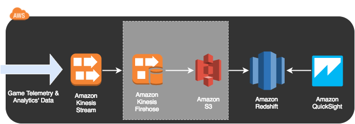

GAM310
Telemetry & Analytics' Pipelines for Game Balancing
Welcome to the Workshop!
Welcome to the Workshop!
In this first lab, we will set up a landing zone for the rest of the workshop, and build a standard analytics pipeline.
You must now set up the landing zone for your data pipelines. For this we will use glorious CloudFormation! This template will create a new VPC, subnets, routes, security groups, create a bastion host, and log in for you. We've also included Redshift at this early part of the lab as it takes a few minutes to provision.
Please enter the following command to create the foundation infrastructure, changing the "WorkshopKeyPair" if necessary:
Alternatively, you can click this link to use the Web Console.
This CloudFormation stack will take about 10 minutes to construct the infrastructure we need.
Now that you have your Bastion Host configured and have logged in, let's set up your first analytics pipeline! The pipeline is described in the following diagram:

Start by logging into the instance. You'll need to use your KeyPair filename, as well as the BastionPublicDNS from the Outputs of your CloudFormation stack. They can be found at this link.
Now that you're in the instance, you are going to create your Kinesis Streams! We've created a script that will set up your security and create the Kinesis Streams and Kinesis Firehose Streams for you. To run the script, execute the following command from your Bastion Host.
The script will pause to allow you to copy and paste some SQL commands to create tables in Redshift. If you have problems creating the SQL commands, they are available here:
Don't forget to issue a 'quit' after you've created your tables so the script can continue building your services!
Let's fire up your game bot! You have a little web application installed on your bastion host that will propagate data from your EC2 instance to Kinesis.
1. Visit this link if you don't already have your CloudFormation Output parameters open. Click on the CloudFormation stack "GamingWorkshopStack". Click on the URL from the "GameBotURL" Output of this Stack. This will open a website hosted on your EC2 instance where the GameBot resides.
2. Click on the "Generate" button. This will start a bot that generates and submits data to your "workShopTelemetryStream" Amazon Kinesis Stream. Another window will appear showing the data being sent. Please notify a staff member if you have any error messages. You should see numerous messages saying "Pushing to kinesis a batch of...". Click the "Generate" button a few times to give you some more data.
3. Click on the drop-down menu on the top and select "telemetry1-1", then click the "Load configuration profile" button. This will change the stream that you're pushing data to. Click the "Generate" button to push data to the "workshopTelemetryStream"
4. Click on the "Sending in loop" checkbox, then click on the "Generate" button to start pushing a constant stream of data to Kinesis
5. Check the AWS Kinesis console monitoring window to see your data propagating.
It will take a few minutes for Firehose to push the data to Redshift.
6. You can check the data is being pushed in by running a query like this in your PGCLI terminal (you can access it using the "ClusterEndpointConnectCmd" from your CloudFormation Outputs):
You can also visit the Kinesis Firehose Monitoring page to monitor your workshopTelemetryFH Delivery Stream.
7. Run another query in PGCLI to see what the win rate looks like:
You will notice that the Losses and DNFs are very high, and the Wins are very low. This isn't a good player experience and implies that there is a game balancing issue. Try making a change to the game telemetry parameters to see how they effect the proportions of wins.
8. Click on the "telemetry1-1 drop-down and change it to "telemetry1-2", then click "Load configuration profile". This applies a different profile that increases the player parameters. Feel free to change the JSON if you want to experiment with how the numbers affect the win rate. Run the same query as before to see how the win rate changes.
After a few minutes of the data from telemetry1-2 propagating, you should see the changes in the win rate.
Let's get QuickSight working! Please visit QuickSight, connect to the Redshift table you've created, and experiment with graphing the data. Full instructions are below.
1. Click on this link to visit the QuickSight website or select "QuickSight" in the Console.
2. Select "Sign Up For Free" (or "Sign In" if you've used it before and have an account)
3. Select "Continue" to select the Standard edition (NEW USERS ONLY)
4. Enter your name and email address, and for the "QuickSight capacity region" select "US West (Oregon)" and click "Finish". Leave everything else as defaults (NEW USERS ONLY). If you're an existing user, switch to the Oregon region.
5. Click the "Go to Amazon QuickSight" button (NEW USERS ONLY)
6. Click the "New analysis" button in the top left
7. Click the "New data set" button in the top left
8. Click the "Redshift - Auto-discovered" button
9. A "New Redshift data source" window will appear. For the "Data source name" enter "GamingWorkshopRedshift". For "Instance ID" click the drop-down arrow on the right of the selection box, and select "workshopcluster". The "Database name" should be automatically populated with "workshopdb", but you will need to enter a "Username" of "wsuser" and "Password" of "wsPassword0". Click the "Validate" button on the bottom left of the window. This should turn to "Validated" with a green tick if you're successful. Click "Create data source".
10. Select "analytics1" and click the "Select" button on the bottom right
11. Select "Directly query your data" and click the "Visualize" button on the bottom right
12. Explore your data! Let's start with by looking at the average walletbalance per country. Click on "walletbalance" in the list on the left. QuickSight will automatically select a graph type once after you select your next measure.
13. Select "country" from the left side, and QuickSight will show you the "Count of records by Country"
14. Click the chevron in the top-right side to expand the Field wells
15. Click and drag "walletbalance" to the "Value" field well
16. Click on the chevron next to the "Value" field well, and change the "Aggregate: Sum" to "Average"
17. Click and drag "playerlevel" to the "Group/Color" field well. This shows you the average wallet balance for each player level within each country.
Feel free to keep exploring QuickSight with your GameBot data set.
You've now completed Lab 1!
Note: When a reasonable amount of participants have progressed to this point, we will pause and present some slides explaining the next lab.
If you're keen, it's perfectly fine to proceed - but it's recommended that you hit the button below and then take a break for a moment until a reasonable number of participants are ready to proceed.